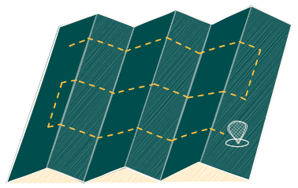

Recap, Thank You, and Farewell
A Visual Summary of the Conference
Abstract
Throughout the conference I will be visually capturing the sessions, distilling themes, patterns, metaphors, and connective threads as hybrid sketch-notes.
In this closing session I will walk you through those visual notes to recap the week, surface my own key takeaways, and give you a moment to pause, reflect, and integrate what mattered most to you.
We will also open a shared Excalidraw whiteboard, a living “hall of memories / hall of takeaways”, where you can add reflections, sketches, quotes, doodles, screenshots, or anything that deserves to be remembered. The link to the shared board will be provided live during the session.
Key takeaways:
- See a synthesized visual narrative of the conference
- Identify and articulate your own most meaningful takeaways
- Contribute to a collaborative Excalidraw memory space
- Experience how visual note synthesis supports reflection
Speaker Bio

Zsolt Viczián
Visual thinker, developer, and author of Sketch Your Mind: Nurture a Playful and Creative Brain. He is the creator of the popular Excalidraw plugin for Obsidian and host of the Visual Thinking Workshop. With a background in engineering, IT, and knowledge systems, Zsolt has spent over 25 years exploring how visuals, space, and structure can transform the way we think, learn, and create.